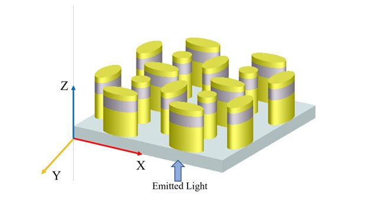
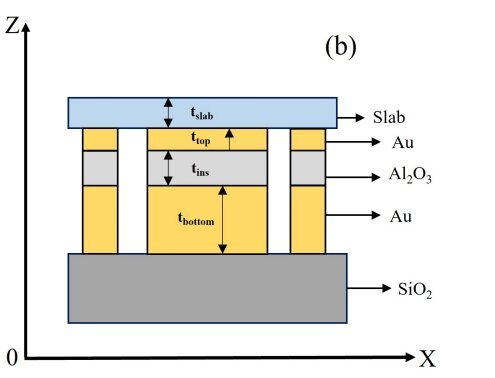

Research Experience
Undergraduate thesis, computational electromagnetics, and nanophotonics
Design and Performance Analysis of Elliptical Nanorod Array Plasmonic Biosensor
Department of Electrical and Electronic Engineering, BUET
Overview & Background
For my undergraduate thesis, I investigated the design and optimization of a Metal-Insulator-Metal (MIM) elliptical nanorod plasmonic biosensor, which was an introduction of mine into the realm of plasmonics and photonics. The study focused on how nanoscale geometry and material selection influence localized surface plasmon resonance (LSPR), with the goal of enhancing sensitivity for biochemical detection. Using advanced numerical modeling, the work explored different physical dimensions, material configurations, and resonance behaviors to establish an optimized biosensor design.
High resonance wavelength shift per refractive index unit.
Balances sharp resonance with high spectral sensitivity.
Indicates minimal absorption loss and sharp resonance peaks.
Applied Finite-Difference Time-Domain (FDTD) simulations to model electromagnetic wave interactions within the nanorod array.
Evaluated Al₂O₃ and TiO₂ as dielectric insulators, analyzing how refractive index changes impact resonance shifts.
Varied major/minor axes of the ellipse, slab thickness, central rod inclusion, and periodicity to understand their effects on resonance wavelength and sensitivity.
Demonstrated strong field localization at nanorod edges, confirming that elliptical geometries outperform circular nanorods in sensing performance.
Explored different dielectric thicknesses, tested central rod variations (ultimately discarded for negligible effect), and compared circular vs. elliptical nanorod arrays.
Validated the potential of optimized MIM plasmonic structures for next-generation biosensors, particularly in medical diagnostics and environmental monitoring.
Simulation & Structural Models

3D view of the array of elliptical and circular nanorods

2D (XZ) view of MIM structure with slab